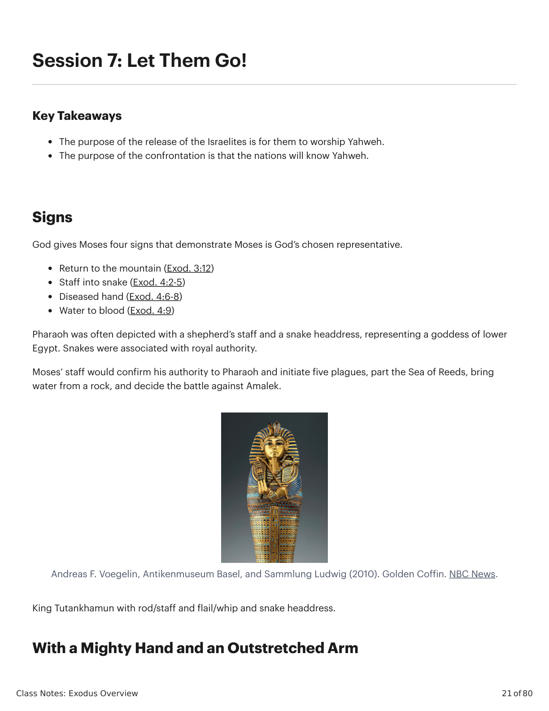
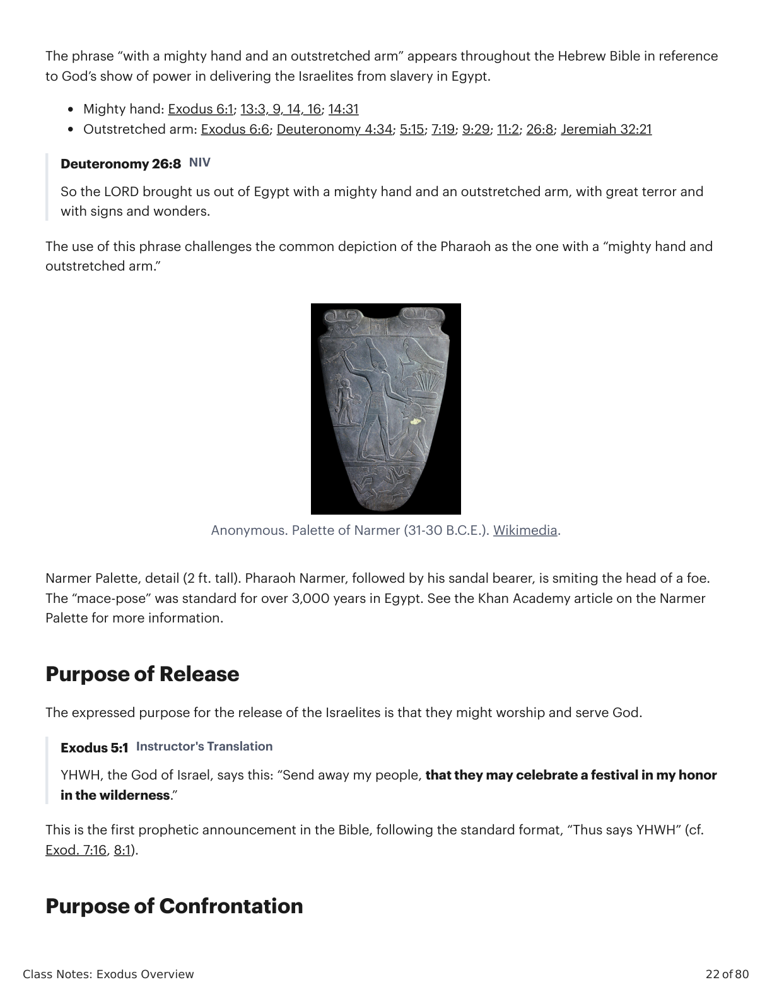
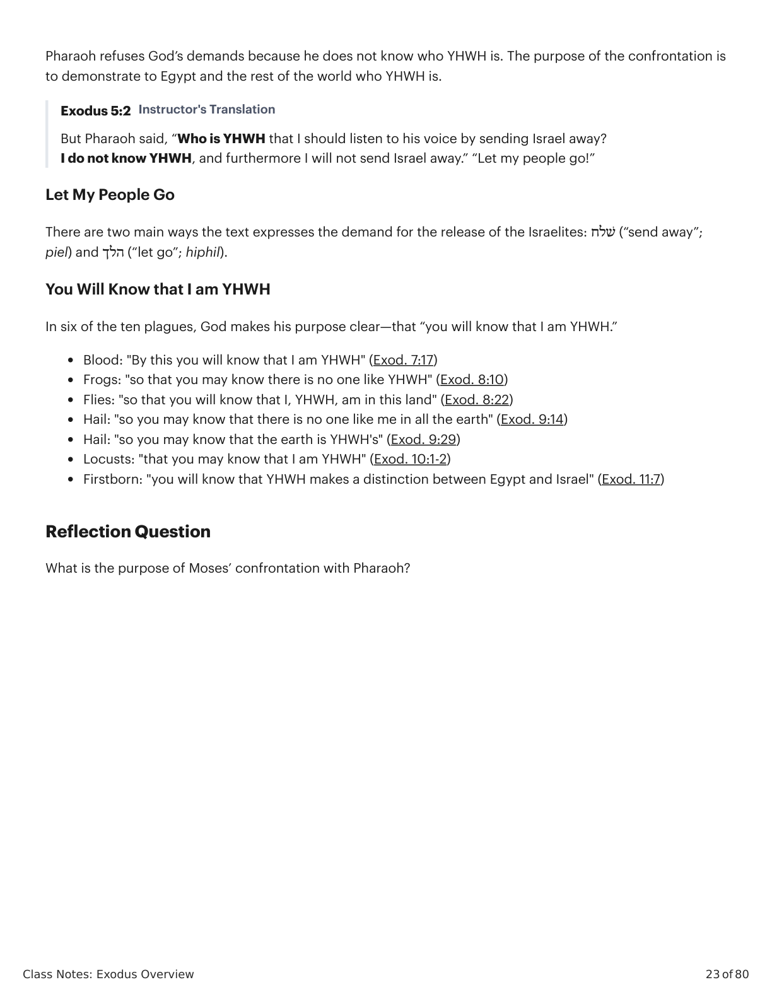

Sessão 7: Class Notes: Exodus OverviewSession 7: Class Notes: Exodus Overview
Class Notes: Exodus Overview
21 of 80
Session 7: Let Them Go!
Key Takeaways
The purpose of the release of the Israelites is for them to worship Yahweh.
The purpose of the confrontation is that the nations will know Yahweh.
Signs
God gives Moses four signs that demonstrate Moses is God’s chosen representative.
Return to the mountain (Exod. 3:12)
Staff into snake (Exod. 4:2-5)
Diseased hand (Exod. 4:6-8)
Water to blood (Exod. 4:9)
Pharaoh was often depicted with a shepherd’s staff and a snake headdress, representing a goddess of lower
Egypt. Snakes were associated with royal authority.
Moses’ staff would confirm his authority to Pharaoh and initiate five plagues, part the Sea of Reeds, bring
water from a rock, and decide the battle against Amalek.
Andreas F. Voegelin, Antikenmuseum Basel, and Sammlung Ludwig (2010). Golden Coffin. NBC News.
King Tutankhamun with rod/staff and flail/whip and snake headdress.
With a Mighty Hand and an Outstretched Arm

Êxodo X:Y. Tradução e Design Literário por Tim Mackie para BibleProject Classroom: José (2021).Exodus X:Y. Translation and Literary Design by Tim Mackie for BibleProject Classroom: Joseph (2021).
Class Notes: Exodus Overview
22 of 80
The phrase “with a mighty hand and an outstretched arm” appears throughout the Hebrew Bible in reference
to God’s show of power in delivering the Israelites from slavery in Egypt.
Mighty hand: Exodus 6:1; 13:3, 9, 14, 16; 14:31
Outstretched arm: Exodus 6:6; Deuteronomy 4:34; 5:15; 7:19; 9:29; 11:2; 26:8; Jeremiah 32:21
Deuteronomy 26:8 NIV
So the LORD brought us out of Egypt with a mighty hand and an outstretched arm, with great terror and
with signs and wonders.
The use of this phrase challenges the common depiction of the Pharaoh as the one with a “mighty hand and
outstretched arm.”
Anonymous. Palette of Narmer (31-30 B.C.E.). Wikimedia.
Narmer Palette, detail (2 ft. tall). Pharaoh Narmer, followed by his sandal bearer, is smiting the head of a foe.
The “mace-pose” was standard for over 3,000 years in Egypt. See the Khan Academy article on the Narmer
Palette for more information.
Purpose of Release
The expressed purpose for the release of the Israelites is that they might worship and serve God.
Exodus 5:1 Instructor's Translation
YHWH, the God of Israel, says this: “Send away my people, that they may celebrate a festival in my honor
in the wilderness.”
This is the first prophetic announcement in the Bible, following the standard format, “Thus says YHWH” (cf.
Exod. 7:16, 8:1).
Purpose of Confrontation

Êxodo X:Y. Tradução e Design Literário por Tim Mackie para BibleProject Classroom: José (2021).Exodus X:Y. Translation and Literary Design by Tim Mackie for BibleProject Classroom: Joseph (2021).
Class Notes: Exodus Overview
23 of 80
Pharaoh refuses God’s demands because he does not know who YHWH is. The purpose of the confrontation is
to demonstrate to Egypt and the rest of the world who YHWH is.
Exodus 5:2 Instructor's Translation
But Pharaoh said, “Who is YHWH that I should listen to his voice by sending Israel away?
I do not know YHWH, and furthermore I will not send Israel away.” “Let my people go!”
Let My People Go
There are two main ways the text expresses the demand for the release of the Israelites: ׁשלח (“send away”;
piel) and הלך (“let go”; hiphil).
You Will Know that I am YHWH
In six of the ten plagues, God makes his purpose clear—that “you will know that I am YHWH.”
Blood: "By this you will know that I am YHWH" (Exod. 7:17)
Frogs: "so that you may know there is no one like YHWH" (Exod. 8:10)
Flies: "so that you will know that I, YHWH, am in this land" (Exod. 8:22)
Hail: "so you may know that there is no one like me in all the earth" (Exod. 9:14)
Hail: "so you may know that the earth is YHWH's" (Exod. 9:29)
Locusts: "that you may know that I am YHWH" (Exod. 10:1-2)
Firstborn: "you will know that YHWH makes a distinction between Egypt and Israel" (Exod. 11:7)
Reflection Question
What is the purpose of Moses’ confrontation with Pharaoh?

Êxodo X:Y. Tradução e Design Literário por Tim Mackie para BibleProject Classroom: José (2021).Exodus X:Y. Translation and Literary Design by Tim Mackie for BibleProject Classroom: Joseph (2021).